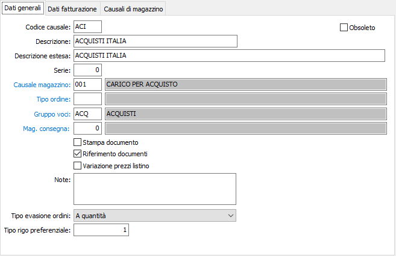
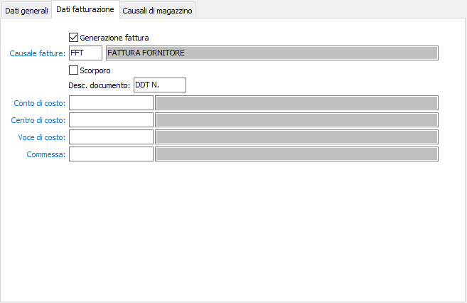
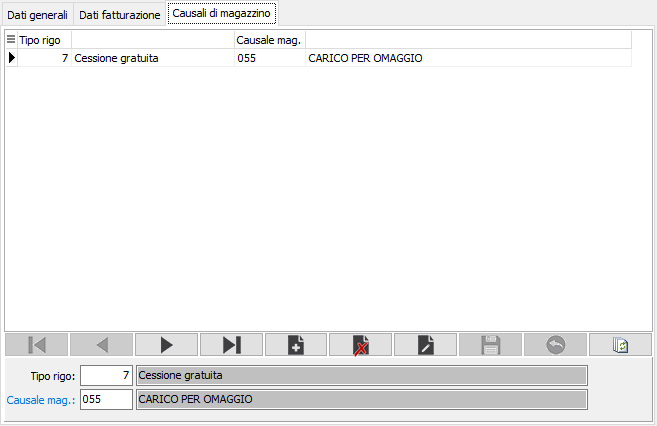

Causali Ddt
Le causali vengono utilizzate al momento dell’inserimento di un Ddt di acquisto e determinano il tipo di documento da emettere.
Grazie alle diverse causali possono essere emessi Ddt di acquisto che generano fatture o Ddt che non generano fatture.
Se è presente la procedura di Gestione Magazzino, nella causale può essere inserita la relativa causale di magazzino affinché la registrazione di un Ddt determini, senza ulteriori interventi da parte dell’operatore, una scrittura di prima nota di magazzino.
E’ possibile gestire causali che consentono di inserire documenti che daranno origine fatture o note di credito solo a valore, agendo comunque sui movimenti di magazzino solo a valore. E’ consigliabile assegnare a queste causali una “serie” di documenti diversa rispetto a quella utilizzata dalle causali che generano documenti di effettivo trasferimento merci.
La finestra video di manutenzione Causali Ddt si articola su 3 pagine video.
Linguetta dati generali

CODICE: codice alfanumerico di 3 caratteri, a libera scelta dell'utente, per individuare la causale attiva. Sul campo sono attive le funzioni di ricerca (F9) sulla tabella stessa.
DESCRIZIONE: campo alfanumerico di 30 caratteri per inserire la descrizione della causale attiva. Questa descrizione viene stampata sui documenti se il programma di stampa lo prevede.
DESCRIZIONE ESTESA: campo alfanumerico di 60 caratteri per inserire la descrizione estera della causale attiva ad uso interno dell’utente. Questa descrizione non viene stampata sui documenti ma viene visualizzata nelle viste.
SERIE: campo numerico per inserire il numero di serie del documento. Ciascuna serie attiva una propria numerazione di documenti. E’ necessario, in fase di immissione del documento, per proporre automaticamente e correttamente il numero progressivo del documento acquisito dalla tabella protocolli.
CAUSALE MAGAZZINO: codice alfanumerico di 3 caratteri, presente nella tabella Causali di magazzino, che individua i parametri del movimento di magazzino generato automaticamente dal documento attivo. L’informazione può essere omessa in caso di assenza della procedura Gestione magazzino oppure se non si intende generare automaticamente movimenti di magazzino. Sul campo sono attive le funzioni di ricerca (F9) e manutenzione (CTRL+W) sulla tabella stessa.
TIPO ORDINE: codice alfanumerico di 3 caratteri, presente nella tabella Tipologie ordini, che individua la tipologia di ordini che possono essere evasi tramite il documento attivo. L’informazione può essere omessa se non si intende riservare il documento attivo all’evasione di una specifica tipologia di ordini. Sul campo sono attive le funzioni di ricerca (F9) e manutenzione (CTRL+W) sulla tabella stessa.
GRUPPO VOCI: Eventuale codice alfanumerico di 3 caratteri, presente nella tabella Gruppi voci di costo, da assegnare alla causale attiva. Sul campo sono attive le funzioni di ricerca (F9) e manutenzione (CTRL+W) sulla tabella stessa.
MAG. CONSEGNA: è possibile indicare un magazzino preferenziale di consegna (da proporre a livello di rigo). Sul campo sono attive le funzioni di ricerca (F9).
STAMPA DOCUMENTO: Definisce se il documento deve essere stampato (casella con segno di spunta) o meno (casella vuota).
RIFERIMENTO DOCUMENTI: determina, se presente la spunta, la generazione sulla fattura dei riferimenti ai numeri di Ddt.
VARIAZIONE PREZZI LISTINO: definisce se dai documenti emessi con questa causale è consentito modificare i prezzi di listino in base a quanto definito sull'anagrafica dell'intestatario (casella con segno di spunta).
NOTE: campo note per descrizioni relative al documento attivo.
TIPO EVASIONE ORDINI: Definisce se un eventuale ordine dovrà essere evaso a quantità oppure a valore; valori possibili: a quantità, a valore.
TIPO RIGO PREFERENZIALE: Indica il tipo rigo da proporre in fase di emissione del Ddt. Sul campo sono attive le funzioni di ricerca (F9).
OBSOLETO: flag attivabile dall’utente per inibire il possibile utilizzo dell’elemento di tabella in esame nelle successive transazioni.
Linguetta Dati fatturazione
La linguetta contiene le informazioni relative ai criteri di creazione della successiva fattura.

GENERAZIONE FATTURA: abilita, se presente la spunta, la successiva generazione di fatture a partire dal documento attivo, secondo le modalità previste per ciascun fornitore nell’anagrafica del fornitore stesso.
CAUSALE FATTURA: eventuale codice alfanumerico di 3 caratteri, presente nella tabella Causali di fatturazione, che definisce il tipo di fattura che sarà generato dal documento attivo. Il valore è significativo se il flag precedente contiene la spunta. Sul campo sono attive le funzioni di ricerca (F9) e manutenzione (CTRL+W) sulla tabella stessa.
SCORPORO: Definisce se il documento è soggetto a scorporo dell'Iva dal totale del documento in fase di registrazione (casella con segno di spunta). In questo caso i prezzi inseriti nel documenti saranno al lordo di Iva.
DESCRIZIONE DOCUMENTO: campo alfanumerico di 8 caratteri per descrivere la dicitura che si vuole premettere ai numeri dei documenti sulla fattura (es: DDT)
CONTO DI COSTO: eventuale codice alfanumerico di 8 caratteri, presente in piano dei conti, per definire il sottoconto contabile di costo a cui verrà addebitato l’imponibile del documento. Sul campo sono attive le funzioni di ricerca (F9) e manutenzione (CTRL+W) sulla tabella stessa.
CENTRO DI COSTO: campo significativo solo in presenza del modulo Contabilità analitica opportunamente configurato. Può contenere un codice alfanumerico di 15 caratteri, per definire il centro di costo a cui verrà accreditato l’imponibile del documento. Sul campo sono attive le funzioni di ricerca (F9) e manutenzione (CTRL+W) sulla tabella stessa.
VOCE DI COSTO: campo significativo solo in presenza del modulo Contabilità analitica opportunamente configurato. Può contenere un codice alfanumerico di 15 caratteri, per definire la voce di costo a cui verrà accreditato l’imponibile del documento. Sul campo sono attive le funzioni di ricerca (F9) e manutenzione (CTRL+W) sulla tabella stessa.
COMMESSA: campo significativo solo in presenza del modulo Contabilità analitica opportunamente configurato. Può contenere un codice alfanumerico di 15 caratteri, per definire la commessa a cui verrà accreditato l’imponibile del documento. Sul campo sono attive le funzioni di ricerca (F9) e manutenzione (CTRL+W) sulla tabella stessa.
Linguetta Causali di magazzino
La finestra permette di associare al singolo tipo rigo una specifica causale di magazzino, diversa dalla causale di magazzino principale.

TIPO RIGO: Indica il tipo rigo da associare alla causale. Sul campo sono attive le funzioni di ricerca (F9).
CAUSALE MAGAZZINO: codice alfanumerico di 3 caratteri, presente nella tabella Causali di magazzino, che individua i parametri del movimento di magazzino generato automaticamente dal documento attivo per il tipo rigo richiesto. Sul campo sono attive le funzioni di ricerca (F9) e manutenzione (CTRL+W) sulla tabella stessa.